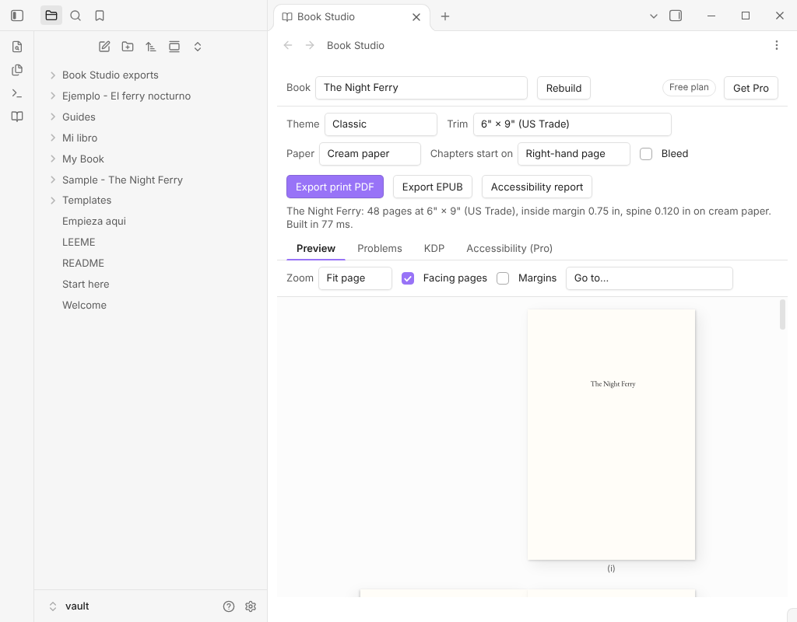

Obsidian template vault
KDP Book Vault
Start your book with the manifest, front matter, chapter templates and a complete sample already set up. Open it in Obsidian, write, and export with the free Book Studio plugin.
Not affiliated with Amazon; KDP is a trademark of Amazon.

What it is and who it is for
KDP Book Vault is an Obsidian vault, not a plugin. It gives self-publishing authors the part that takes hours the first time: a book note with the right properties, the folder layout for front matter, chapters and back matter, and a finished sample to copy from.
It is made for the free Book Studio plugin, which turns the notes into a KDP print PDF and an accessible EPUB 3. Examples are included in English and in Spanish.
What is inside
- Book templatesA book manifest with every property Book Studio reads, plus chapter, front matter, back matter and about-the-author templates.
- Two empty books to write inMy Book and Mi libro: a manifest and a first chapter, ready to rename and fill.
- A finished sample bookThe Night Ferry, a short original novel in two parts with foreword, acknowledgments, author bio, a map image and a struck-out draft chapter, all wired into the manifest. A Spanish sample, El ferry nocturno, sits beside it.
- GuidesA Book Studio cheat sheet (every property, its values, and whether it is free or Pro) and a KDP checklist in plain words, linking to Amazon's own help pages.
- Start here notesA short first-run path in English and in Spanish.
What you need
- Obsidian, and the free Book Studio plugin from the community directory. The pack works with the free plugin: the sample exports to PDF and EPUB without paying for anything.
- Book Studio Pro is optional. The cheat sheet marks which properties belong to it (more themes and trim sizes, footnotes on the page, index terms, full cover, KDP preflight). Nothing in the pack depends on them.
What you get: one zip of Markdown files and images. No plugin code, no installer, no activation.
Price
19 USD, one-time payment.
One-time payment. No subscription, and no activation: the pack is files, so there is no trial. The price is the same for the English and Spanish content, which come in the same zip.
How to use it
- Download the zip from the receipt email or the payment page.
- Unzip it anywhere you like.
- In Obsidian choose Open folder as vault and pick the unzipped folder.
- Follow Start here: install Book Studio, open The Night Ferry, run Open studio, then copy My Book and start writing.
Privacy
- It is only Markdown and images. No code, no telemetry, no personal data and no network calls.
- The sample text is original and written for this pack. It contains no ISBN and no third-party content.
- This page has no cookies and loads nothing from other sites.
Licence of use
You may use the templates and the sample structure for your own books, personal or commercial, and sell the books you write. You may not resell, share or redistribute the pack itself.
Refunds
Payments and refunds are handled by the payment service. Its terms, shown at checkout, apply.
Questions
Do I need Book Studio Pro?
No. The sample and the empty books use only free features.
Does it work on my phone?
Yes, the vault is plain Markdown and opens in Obsidian mobile. Exporting the PDF and EPUB is easier on a computer.
Can I sell the book I write with it?
Yes. The books you write are yours. Only the pack itself cannot be resold.
Will I get updates?
Improvements to the pack will be available from the same payment page. Check it for the current version.
Is this a book-writing course or a cover designer?
No. It is a set of templates and an example. The cover goes in as an image you provide.